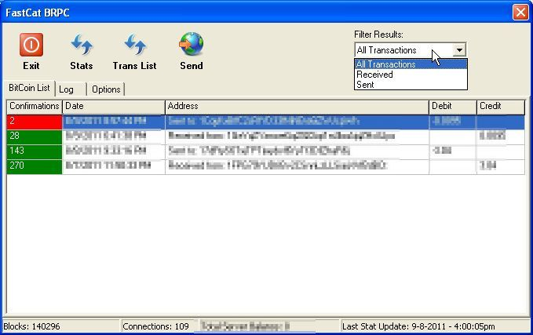

FastCat BRPC is a Fast and low memory consumption client/frontend for the bitcoind client on any server. This software allows you to connect to any bitcoind service running on any server with an public IP or your local network. You can also use localhost.
This app connects using SSL to your bitcoind server or without SSL your choice. It will send and receive responses using the RPC protocol and will run on any Windows machine.
Currently the app starts in less than 5 seconds and runs in 8 MB or less Ram! Very fast and useful.
Please check back as we are soon launching the Pro version with many many features like a sandbox!!
So if you own a server or VPS running bitcoind or you want to run bitcoind on your local system then this is the software for you!
Screenshot

Features
- Transaction List
- Automatic balloon notifications of new transactions
- Auto query server for new information
- SSL connection to bitcoind client
- Sending of Bitcoins
- Filtering list of transactions based on sent or received
- Server stats (Connections, Blocks, Balance)
- Run with low memory footprint in taskbar of only 8MB Ram!
- Autostart Minimized with Windows
Feature Progress of PRO Version
- Sandbox for sending API calls to server and get response
- Address verification box
- Personal Address Book
History
The project was announced on August 9th, 2011 (5.1).
External Links
- Microtronix FastCat BRPC
- FastCat BRPC on Bitcoin Forums.net